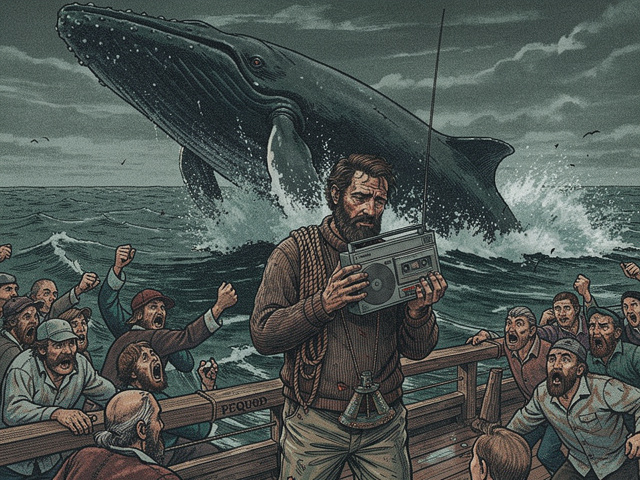

The wind clawed at the men on deck, cold and wet as a dead man's fingers. Dawn broke bruised—purple hemorrhaging into grey—offering no comfort, only stark, unforgiving light that bled across the heaving metallic swell. The Pequod groaned under the storm's lingering assault, her radar dish canted at a useless angle, her antennae a tangle of severed nerves. But every man's eyes, raw from sleepless nights and salt, fixed on a point three leagues to starboard where a geyser of white steam erupted against the dark horizon and vanished.
"There she blows!" Stubb's cry tore from his throat, hoarse and stripped of its usual sardonic edge. Pure, primal awe.
Ahab stood like a gnarled monument on the quarterdeck, grizzled beard whipping in the wind. He raised one hooked finger. "Lower away! All hands to the boats! Starbuck, your watch to port! Stubb, to starboard! Queequeg, to the stern-boat with me!" His voice, normally a rasp, drilled through the morning air with terrible clarity.
Urgent commands. The clang of davits. Men scrambling. Ishmael gripped his cassette recorder—sodden, useless weight since the storm—and found himself hustled into Starbuck's boat. The heavy oak groaned as it swung out, then hit the surface with a sickening lurch. The ocean's roar swallowed all sound except Starbuck's sharp, rhythmic shouts: "Give way, men! Give way!"
The oars, slick with spray, bit into the waves. The Pequod receded behind them—immense, wounded, her rust-streaked hull a monument to a dying industry. Ishmael crouched among straining backs, felt the sea's cold breath seeping into his bones. His heart hammered against his ribs. This was it. The White Sound had materialized, not as an echo on tape, but as a living god.
The chase became a symphony of exertion and terror. The whaleboats—tiny wooden slivers—skimmed over troughs, crested swells, driven by thirty men's desperate power. Ishmael's hands ached, his muscles screamed, but he pulled with the rest, eyes fixed on the distant spout. The sea was malevolent, trying to swat them away, to claim them as its own.
The spout grew closer. Impossibly large. Blossoming above the waves like a spectral tree.
Then the whale itself rolled into view.
Ishmael's breath caught. Vaster than any ship. A pale, scarred mountain of flesh that shimmered with unholy luminescence beneath the grey sky. Its skin, bleached to ethereal white, mapped ancient battles in ropes and harpoon wounds—some raw, others scarred like tribal tattoos. Its breath hit them like a physical blow, hot and fishy, reeking of depths no man had sounded.
"Easy, men, easy!" Starbuck's voice pulled taut as wire. He stood in the stern, tiller in hand. In the bow, Tashtego poised with harpoon raised, steel point gleaming—a glint of human defiance against a force that predated man.
The White Whale did not flee. It regarded them, its vast eye rolling slowly in its socket. Dark. Ancient. A stare that spoke not of fear but of profound, weary understanding.
"Now! To the flank! Steady, Tashtego!"
The boat surged forward in a final desperate burst. Tashtego, silhouetted against the monstrous flank, launched the harpoon. It flew true, a dark streak against white skin, burying itself with a sickening thwack deep into blubber.
A scream erupted from the depths. Not pain—ancient rage. The ocean convulsed. The whale, instead of diving, turned. Slowly. Majestically. Its immense fluke rose higher than a mast, then descended with a deafening crash that swamped Starbuck's boat, drowning them in icy deluge. The harpoon line snapped taut as piano wire, began to smoke, singing a terrible song of strain.
"Hold fast, Tashtego! Hold fast!" Starbuck fought the tiller as the boat spun, gunwales dipping toward capsize.
But the White Whale would not be held. With an almost casual flick of its tail, it surged forward, dragging the boat at insane speed. The rope screamed. Then—a sound like a cannon shot—it snapped. The sudden slack sent Tashtego sprawling. The boat reeled, spinning helplessly in the whale's churning wake.
From the other side, Stubb's boat had also struck home. Their fate came swifter. The White Whale, seemingly unperturbed by the two embedded irons, simply dove. Not deep and drawn-out but violent, concussive. The water boiled. A moment later it surfaced directly beneath Stubb's boat.
The wooden vessel flew into the air like a child's toy. Splinters. Men screaming. It didn't break entirely but landed crippled, groaning, half-submerged. Stubb clung to a shattered gunwale, his face ghostly pale, his usual sneer replaced by naked terror.
Ahab's stern-boat had held back, poised for the second strike. He watched his harpoons shrugged off, his boats splintered. "She toys with us!" The shriek carried above the waves, thin and desperate against the ocean's might. "She toys!"
Retreat was slow. Agonizing. Starbuck's boat, heavy with water, was bailed frantically. Stubb's men, shivering and shaken, lashed their damaged craft together, barely afloat. When they finally limped back, the Pequod seemed a haven despite its rust and age.
Ishmael pulled himself over the rail and felt his legs buckle. His body ached. His mind reeled. He'd seen it. Faced it. The White Whale was not merely an animal but a force, an ancient spirit of the deep that scorned human ambition.
On deck, the crew huddled, soaked and pale, their bravado gone. Even Queequeg wiped spray from his brow with a hand that trembled almost imperceptibly.
Starbuck confronted Ahab, his face etched with grim resignation. "Captain, she's too strong. Too clever. We lost two lines, nearly lost a boat. We'll be sailing in circles for this one whale while the others pass us by."
Ahab turned slowly. His eyes burned with unholy fire, fixed on the receding silhouette of the White Whale. The hump of its back, briefly visible against the distant horizon, was already diminishing—a ghost retreating into vastness. "She has tasted my steel." His voice rasped, a fierce, mad smile twisting his lips. "And I have tasted her scorn. It matters not. She merely confirms what I already knew. She is the one. And she will be mine."
He slammed his fist onto the rail—a hollow thud that echoed the grim finality in his words. The Pequod, already a ship on borrowed time, seemed to shudder under his resolve, now irrevocably bound to the whale that had just proven itself invincible.